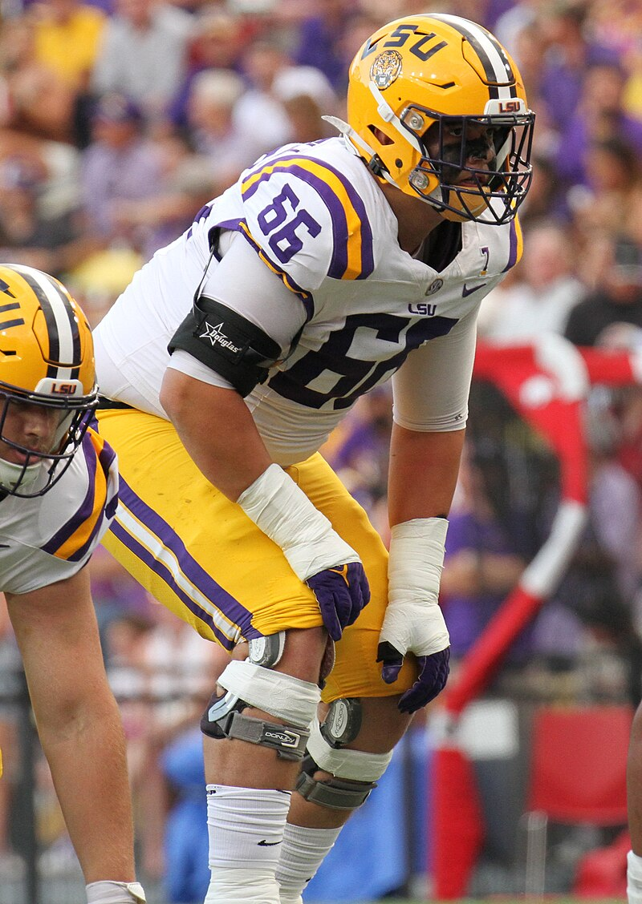

The Patriots enetered the 2025 NFL draft with 9 selections, which is ood considering the numerous chasm-like holes in their roster, the most glaring of which are perhaps at OL and WR. The picks they held entering the draft were:
| Round | Pick No. |
|---|---|
| 1 | 4 |
| 2 | 38 |
| 3 | 69, 77 |
| 4 | 106 |
| 5 | 144, 177 |
| 7 | 220, 238 |
No. 4: Will Campbell OT, LSU
Grade: B+
Campbell was a 2 year starter at LSU, being selected for the All-SEC team both years. He fills an immediate need for the Patriots at left tackle. There's been considerable debate about Campbell's prospects at LT given his relatively short arms, but the Patriots ultimately decided that his two years of success against top pass rushers in the SEC outweighed any concerns about his reach. Even if tackle doesn't work out, he's a great athlete and would be an excellent guard.
I rate this pick a B+ only because Campbell might still have been on the board around pick 10 so the Patriots should've been looking to move down. Unfortunately the chatter around the league is that the Patriots received zero offers for the 4th overall pick, so perhaps their hands were tied.
Imagine from www.Wikipedia.com. Available under a creative commons license.
No. 38: TreVeyon Henderson RB, OSU
Grade: B+
This was an interesting pick. While I'm very high on Henderson -- I had him as the RB2 in the draft, behind only Ashton Jeanty, the Patriots have a decent RB in Rhamondre Stevenson, and they passsed on some seriously talented players including Will Johnson (who should have been a top 10 pick, but fell due to health concerns) and Luther Burden III. I would've taken Johnson, who might be a generational talent at CB, but passing on Burden stung too, as he's a versatile talented receiver, and he obviously fills a huge need for the anemic Patriots offense.